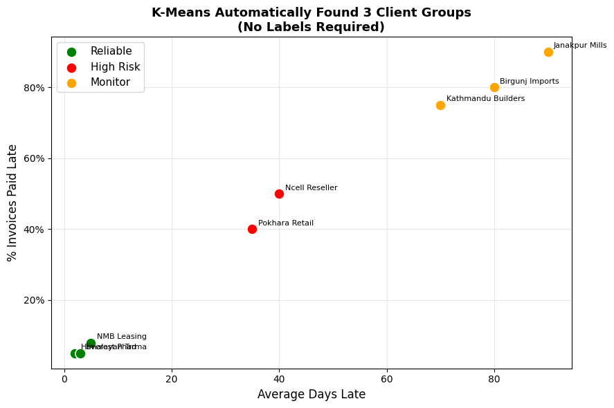

🌐 Introduction to Data Science, Machine Learning & AI
For CA & Finance Professionals — No Coding Background Required
Course: ICAN Python & Data Analytics Training
Session Duration: 1.5–2 hours
Goal: Understand what AI, ML, Data Science, and Data Analytics mean —
and where you as a CA professional fit into this world.
📋 Table of Contents
| Part | Section | Topic |
|---|---|---|
| Part 1: The Big Picture | 1 | Artificial Intelligence (AI) |
| 2 | Machine Learning (ML) | |
| 3 | Data Science | |
| 4 | Data Analytics | |
| 5 | How They All Relate | |
| Part 2: Types of ML | 6 | Supervised Learning |
| 7 | Unsupervised Learning | |
| 8 | Reinforcement Learning | |
| 9 | Which Type to Use When? | |
| Part 3: The Workflow | 10 | From Raw Data to Insight |
| 11 | Tools You Will Use in This Course | |
| Part 4: See It in Action | 12 | Supervised — Predict Late Payment |
| 13 | Unsupervised — Group Clients | |
| Part 5: Practice | 14 | Quick Check — 10 Questions |
Part 1: The Big Picture
Section 1: Artificial Intelligence (AI)
What is it?
Artificial Intelligence is the broad field of making computers do things
that normally require human intelligence — like recognising a voice, reading
a document, answering a question, or detecting fraud.
"AI is not one technology. It is an umbrella — a goal.
The goal is machines that can think, reason, and act intelligently."
Nepal CA examples of AI in action today
| Where you've seen AI | What it's doing |
|---|---|
| Esewa / Khalti fraud detection | AI flags suspicious transactions in real time |
| IRD e-filing system | AI cross-checks VAT returns against purchase registers |
| Bank loan scoring | AI reads your income history and approves/rejects instantly |
| NRB surveillance | AI monitors foreign exchange transactions for AML compliance |
| Audit software (CaseWare etc.) | AI highlights unusual journal entries for auditors |
What AI is NOT
- Not magic or sentient
- Not always right (AI makes mistakes too)
- Not replacing CAs — it replaces repetitive tasks, freeing you for judgement work
Section 2: Machine Learning (ML)
What is it?
Machine Learning is the most common way to build AI today.
Instead of writing rules manually, you show the machine thousands of examples
and it figures out the rules itself.
Traditional programming vs Machine Learning
Traditional Programming:
Rules + Data → Computer → Output
Example: IF invoice > 90 days AND amount > NPR 5L THEN flag as overdue
Problem: What about 85 days and NPR 4.9L? You need endless rules.
Machine Learning:
Data + Output → Computer → Rules (automatically learned)
Example: Show 10,000 past invoices (paid / unpaid).
The model learns which patterns predict non-payment.
Result: It handles edge cases you never explicitly wrote.
A simple analogy
Teaching a child to recognise a cat:
- Traditional programming: Write rules: has four legs, has fur, has whiskers, meows…
- Machine learning: Show the child 1,000 cat photos. They learn the pattern themselves.
ML does the same with numbers.
Section 3: Data Science
What is it?
Data Science is the discipline of extracting knowledge and insight from data.
It combines three fields:
Statistics
/\
/ \
/ DS \
/______\
Programming Domain Knowledge
(Python, SQL) (Accounting, Finance, Business)
As a CA, you already have Domain Knowledge — the rarest ingredient.
This course gives you the Programming piece. Statistics you partly know already.
What a Data Scientist does
| Step | Activity |
|---|---|
| 1. Question | Define the business problem (e.g., "Which clients will default?") |
| 2. Collect | Gather data from Tally, ERP, spreadsheets, IRD portal |
| 3. Clean | Fix missing values, duplicates, wrong formats |
| 4. Explore | Charts, summaries — understand what the data is saying |
| 5. Model | Apply ML (predict, cluster, forecast) |
| 6. Communicate | Present findings to management, auditors, regulators |
Section 4: Data Analytics
What is it?
Data Analytics is more focused than Data Science — it is primarily about
understanding what happened and why, rather than building predictive models.
The four levels of analytics
| Level | Question answered | Example (Nepal CA context) |
|---|---|---|
| Descriptive | What happened? | Total VAT collected in FY 2081-82 BS was NPR 28M |
| Diagnostic | Why did it happen? | Revenue fell in Mangsir because 3 key clients delayed orders |
| Predictive | What will happen? | Client NP0103 has 70% chance of late payment next month |
| Prescriptive | What should we do? | Call NP0103 now, reduce credit limit to 30 days |
Most CAs today work at Level 1 (Descriptive) — producing reports.
This course takes you to Level 3 and 4 — predicting and prescribing.
Data Analytics vs Data Science
| Data Analytics | Data Science | |
|---|---|---|
| Focus | Business insight from existing data | Building models from data |
| Output | Dashboards, reports, recommendations | Algorithms, predictions |
| Tools | Excel, Power BI, SQL, Python | Python, R, ML libraries |
| Profile | CA, business analyst, finance team | Data scientist, ML engineer |
Section 5: How They All Relate
Think of them as nested circles — each one contains the next:
┌─────────────────────────────────────────────────────┐
│ ARTIFICIAL INTELLIGENCE │
│ (any technique that makes machines seem smart) │
│ │
│ ┌──────────────────────────────────────────────┐ │
│ │ MACHINE LEARNING │ │
│ │ (machines learn from data, not hard rules) │ │
│ │ │ │
│ │ ┌─────────────────────────────────────┐ │ │
│ │ │ DEEP LEARNING │ │ │
│ │ │ (multi-layer neural networks — │ │ │
│ │ │ powers ChatGPT, image recognition) │ │ │
│ │ └─────────────────────────────────────┘ │ │
│ └──────────────────────────────────────────────┘ │
│ │
│ DATA SCIENCE overlaps AI/ML + Statistics + Coding │
│ DATA ANALYTICS focuses on insight from data │
└─────────────────────────────────────────────────────┘
Where this course sits
This course covers Data Analytics + the foundational ML techniques (Modules 06–10).
Deep Learning and GenAI (like ChatGPT) are beyond scope — but once you finish
this course, you'll understand exactly how they work conceptually.
Part 2: Types of Machine Learning
Section 6: Supervised Learning
The idea
You train a model using labelled examples — data where you already know the answer.
The model learns the relationship between inputs (features) and outputs (labels),
then predicts the output for new, unseen data.
Training phase:
Past Invoices + [ Late? YES / NO ] → Model learns the pattern
Prediction phase:
New Invoice (no label yet) → Model predicts: 72% chance of being late
Two types of supervised learning
| Type | Output | Nepal CA Example |
|---|---|---|
| Classification | Category (Yes/No, High/Medium/Low) | Will this invoice be paid late? (Yes/No) |
| Regression | Number | How many days late will it be? (e.g., 23 days) |
Real-world CA use cases
| Problem | Type | What you predict |
|---|---|---|
| Late payment risk | Classification | Late (Yes) or On-time (No) |
| Revenue forecast | Regression | Next quarter revenue in NPR |
| Audit risk scoring | Classification | High / Medium / Low risk |
| Tax liability estimation | Regression | Estimated tax payable in NPR |
| Fraud detection | Classification | Fraudulent (Yes) or Genuine (No) |
Algorithms used: Logistic Regression, Random Forest, Decision Tree,
Gradient Boosting, Linear Regression — covered in Module 09.
Section 7: Unsupervised Learning
The idea
There are no labels — you don't tell the model the answers.
It discovers hidden patterns or groupings in the data on its own.
Input:
200 clients with: payment history, invoice size, tenure, credit days
(no labels — you haven't categorised them)
Output (discovered automatically):
Group A: 52 clients — fast payers, large invoices, long tenure
Group B: 71 clients — occasional delays, medium invoices
Group C: 38 clients — frequent late payments, short tenure
Group D: 37 clients — very high risk, inconsistent
Types of unsupervised learning
| Type | What it does | Nepal CA Example |
|---|---|---|
| Clustering | Groups similar data points | Segment clients by payment behaviour |
| Dimensionality Reduction | Simplifies many features into fewer | Compress 50 financial ratios into 3 key dimensions |
| Anomaly Detection | Finds unusual outliers | Flag journal entries that don't fit normal patterns |
Algorithms used: K-Means (Module 10), PCA, Isolation Forest
Section 8: Reinforcement Learning
The idea
An agent learns by trial and error — taking actions, receiving rewards
or penalties, and gradually improving its strategy. There is no dataset to train on;
the agent generates its own experience.
Agent (e.g., a trading bot)
↓ takes action (buy / sell / hold)
Environment (stock market)
↓ gives reward (+profit) or penalty (-loss)
Agent updates its strategy
↓ repeat thousands of times
Result: agent learns optimal strategy over time
Famous examples
| Example | What the agent learned |
|---|---|
| AlphaGo (DeepMind) | Beat the world champion at Go by playing millions of games against itself |
| ChatGPT (RLHF) | Learned to give better answers based on human feedback (thumbs up/down) |
| Algorithmic trading | Learns to buy/sell securities to maximise portfolio return |
| Robotics | Robot arm learns to pick objects by trying thousands of times |
CA relevance
Reinforcement Learning is mostly used in robotics, gaming, and trading systems.
As a CA, you are unlikely to build RL systems yourself — but you will encounter them
in algorithmic trading audits, robo-advisory compliance, and fintech regulation.
SEBON Nepal is beginning to develop guidelines for algorithmic trading systems —
understanding RL conceptually will help you audit and advise these clients.
Section 9: Which Type to Use When?
| Situation | Right approach | Why |
|---|---|---|
| You have historical data with known outcomes | Supervised | You can train on past labels |
| You have data but no labels / categories | Unsupervised | Let the algorithm find structure |
| You want to segment customers/expenses | Unsupervised (Clustering) | No need for predefined groups |
| You want to predict a number (revenue, tax) | Supervised (Regression) | Output is continuous |
| You want to predict a category (fraud/not) | Supervised (Classification) | Output is a class |
| You want a system to optimise over time | Reinforcement | No dataset, learns by doing |
Decision flowchart
Do you have labelled data (known outcomes)?
|
YES ──→ SUPERVISED
| ├── Predict a number? → Regression
| └── Predict a class? → Classification
|
NO ──→ UNSUPERVISED
├── Find groups? → Clustering (K-Means)
├── Find outliers? → Anomaly Detection
└── Simplify features? → Dimensionality Reduction (PCA)
Part 3: The Data Science Workflow
Section 10: From Raw Data to Insight
Every real data science project follows roughly the same sequence of steps.
Module 06 covers this in detail (CRISP-DM). Here is the high-level picture:
1. DEFINE THE PROBLEM
└── "Which of our 200 debtors are at risk of not paying next month?"
2. COLLECT THE DATA
└── Export from Tally / ERP: invoice dates, amounts, payment history
3. CLEAN THE DATA ← Module 07
└── Fix missing values, duplicates, wrong dates, currency format errors
4. EXPLORE THE DATA ← Modules 03, 04, 05
└── Charts, pivot tables, summary statistics — understand the data
5. ENGINEER FEATURES ← Module 08
└── Create new columns: days_overdue, late_rate, invoice_vs_industry_avg
6. BUILD THE MODEL ← Modules 09, 10
└── Train Logistic Regression / Random Forest / K-Means
7. EVALUATE
└── Accuracy, silhouette score, ROC-AUC — is the model good enough?
8. ACT ON INSIGHTS
└── Export to Excel, share with collection team, update credit policy
As a CA, Steps 1, 2, 8 are already your strength.
This course trains you for Steps 3–7.
Section 11: Tools You Will Use in This Course
| Tool | What it is | When you use it |
|---|---|---|
| Python | Programming language | Everything — the foundation |
| Jupyter Notebook | Interactive coding environment | Write and run code cell by cell |
| NumPy | Fast number crunching | Arrays, matrices, NPV/IRR (Module 02) |
| Pandas | Data tables (like Excel, but faster) | Import, clean, reshape data (Module 03) |
| Matplotlib | Charts and graphs | Line, bar, pie, waterfall charts (Module 04) |
| Seaborn | Statistical visualisation | Heatmaps, distributions, outlier detection (Module 05) |
| scikit-learn | Machine learning library | Classification, clustering, feature engineering (Modules 08–10) |
How they relate
Python ──┬── NumPy (numbers and maths)
├── Pandas (tables of data)
├── Matplotlib / Seaborn (charts)
└── scikit-learn (machine learning)
├── Preprocessing (StandardScaler, LabelEncoder)
├── Models (LogisticRegression, RandomForest, KMeans)
└── Evaluation (accuracy_score, roc_auc_score, silhouette_score)
Install everything at once:
pip install numpy pandas matplotlib seaborn scikit-learn jupyterlab openpyxl
Part 4: See It in Action
Two tiny examples — just enough to show what ML code looks like.
Section 12: Supervised — Predict Late Payment
We create a tiny dataset of 10 invoices, train a classifier,
and predict whether a new invoice will be paid late.
import pandas as pd
from sklearn.tree import DecisionTreeClassifier
# --- 10 past invoices (our training data) ---
# Features: [Days overdue last time, Invoice amount (NPR 000s), Credit days]
# Label: 1 = was paid LATE, 0 = paid ON TIME
past_data = pd.DataFrame({
'prev_delay_days': [0, 5, 0, 45, 30, 0, 60, 10, 0, 90],
'invoice_NPR_000': [50, 80, 30,200,150, 20,500, 90, 45,800],
'credit_days': [30, 45, 30, 60, 60, 30, 90, 45, 30, 90],
'was_late': [ 0, 0, 0, 1, 1, 0, 1, 0, 0, 1], # label
})
# --- Train the model ---
X_train = past_data[['prev_delay_days', 'invoice_NPR_000', 'credit_days']]
y_train = past_data['was_late']
model = DecisionTreeClassifier(max_depth=3, random_state=42)
model.fit(X_train, y_train)
# --- Predict for 3 new invoices ---
new_invoices = pd.DataFrame({
'Client': ['Himalayan Trading', 'Everest Pharma', 'Kathmandu Builders'],
'prev_delay_days': [0, 35, 70],
'invoice_NPR_000': [40, 180, 600],
'credit_days': [30, 60, 90],
})
X_new = new_invoices[['prev_delay_days', 'invoice_NPR_000', 'credit_days']]
new_invoices['Prediction'] = model.predict(X_new)
new_invoices['Prediction'] = new_invoices['Prediction'].map({0: 'On Time ✓', 1: 'LATE ✗'})
print('=== Supervised Learning: Late Payment Prediction ===')
print(new_invoices[['Client', 'prev_delay_days', 'invoice_NPR_000', 'Prediction']]
.to_string(index=False))
print()
print('The model learned this pattern from 10 past invoices.')
print('In Module 09, we train on 900 invoices for much higher accuracy.')
=== Supervised Learning: Late Payment Prediction ===
Client prev_delay_days invoice_NPR_000 Prediction
Himalayan Trading 0 40 On Time ✓
Everest Pharma 35 180 LATE ✗
Kathmandu Builders 70 600 LATE ✗
The model learned this pattern from 10 past invoices.
In Module 09, we train on 900 invoices for much higher accuracy.
Section 13: Unsupervised — Group Clients Automatically
No labels. We give the algorithm 8 clients and ask it to form 3 natural groups
based on their payment behaviour. The algorithm decides who belongs together.
import numpy as np
import matplotlib.pyplot as plt
from sklearn.cluster import KMeans
from sklearn.preprocessing import StandardScaler
# 8 clients: [avg days late, fraction of invoices paid late]
clients = pd.DataFrame({
'Client': ['Himalayan Trd', 'NMB Leasing', 'Everest Pharma',
'Pokhara Retail', 'Ncell Reseller', 'Kathmandu Builders',
'Birgunj Imports', 'Janakpur Mills'],
'avg_delay_days': [2, 5, 3, 35, 40, 70, 80, 90],
'late_rate': [0.05,0.08,0.05,0.40,0.50,0.75,0.80,0.90],
})
X = StandardScaler().fit_transform(clients[['avg_delay_days', 'late_rate']])
# K-Means finds 3 groups automatically
km = KMeans(n_clusters=3, random_state=42, n_init=10)
clients['Group'] = km.fit_predict(X)
GROUP_NAMES = {0: 'Reliable', 1: 'Monitor', 2: 'High Risk'}
GROUP_COLORS = {'Reliable': 'green', 'Monitor': 'orange', 'High Risk': 'red'}
clients['Segment'] = clients['Group'].map(lambda g: GROUP_NAMES.get(g, f'Group {g}'))
print('=== Unsupervised Learning: Client Segmentation ===')
print('No labels were given — the model found these groups on its own:\n')
for seg in clients['Segment'].unique():
members = clients[clients['Segment'] == seg]['Client'].tolist()
avg_d = clients[clients['Segment'] == seg]['avg_delay_days'].mean()
avg_r = clients[clients['Segment'] == seg]['late_rate'].mean()
print(f' {seg:12s}: {members}')
print(f' avg delay={avg_d:.0f}d, late rate={avg_r:.0%}')
print()
# Plot
fig, ax = plt.subplots(figsize=(9, 6))
for seg in clients['Segment'].unique():
mask = clients['Segment'] == seg
ax.scatter(
clients.loc[mask, 'avg_delay_days'],
clients.loc[mask, 'late_rate'] * 100,
c=GROUP_COLORS.get(seg, 'blue'), s=120, label=seg,
edgecolors='white', linewidth=1.2, zorder=3
)
for _, row in clients[mask].iterrows():
ax.annotate(row['Client'],
(row['avg_delay_days'], row['late_rate']*100),
textcoords='offset points', xytext=(6, 4), fontsize=8)
ax.set_xlabel('Average Days Late', fontsize=12)
ax.set_ylabel('% Invoices Paid Late', fontsize=12)
ax.set_title('K-Means Automatically Found 3 Client Groups\n'
'(No Labels Required)', fontsize=13, fontweight='bold')
ax.legend(fontsize=11)
ax.grid(True, alpha=0.3)
ax.yaxis.set_major_formatter(plt.FuncFormatter(lambda x, _: f'{x:.0f}%'))
plt.tight_layout()
plt.savefig('intro_clustering_demo.png', dpi=120, bbox_inches='tight')
plt.show()
print('In Module 10, we do this with 200 real clients and 6 features.')
=== Unsupervised Learning: Client Segmentation ===
No labels were given — the model found these groups on its own:
Reliable : ['Himalayan Trd', 'NMB Leasing', 'Everest Pharma']
avg delay=3d, late rate=6%
High Risk : ['Pokhara Retail', 'Ncell Reseller']
avg delay=38d, late rate=45%
Monitor : ['Kathmandu Builders', 'Birgunj Imports', 'Janakpur Mills']
avg delay=80d, late rate=82%

In Module 10, we do this with 200 real clients and 6 features.
Part 5: Practice
Section 14: Quick Check — Test Your Understanding
Answer these 10 questions without looking back. Check your answers below.
Q1. AI, Machine Learning, and Deep Learning are all the same thing. True or False?
Q2. In traditional programming you write the rules. In machine learning, _ learns the rules.
Q3. A CA wants to predict whether a client will default on payment.
Is this Supervised or Unsupervised learning? And is it Regression or Classification?
Q4. A CA wants to group 500 expense transactions into natural categories
without manually labelling them. Which type of ML should they use?
Q5. What is the difference between Descriptive Analytics and Predictive Analytics?
Give one Nepal CA example of each.
Q6. Name the three ingredients of Data Science.
Q7. Which Python library would you use to: (a) create a bar chart, (b) load an Excel file,
(c) train a K-Means model?
Q8. AlphaGo learned to play the board game Go by playing millions of games against itself.
Which type of ML is this?
Q9. You have 1,000 audit journal entries and want to automatically flag unusual ones
without knowing in advance what 'unusual' looks like. Which ML approach?
Q10. As a CA, you already have one of the three Data Science ingredients.
What is it, and why is it the rarest?
💡 Answers
A1. False. They are nested: AI ⊃ Machine Learning ⊃ Deep Learning.
Deep Learning is a specific type of ML, which is itself a specific approach to AI.
A2. The machine (model) learns the rules from data.
A3. Supervised Learning → Classification
(You have past examples labelled 'defaulted' or 'paid'. Output is a category.)
A4. Unsupervised Learning — specifically Clustering (e.g., K-Means).
No labels are needed; the algorithm finds natural groups.
A5.
- Descriptive: "Total VAT collected in FY 2081-82 BS was NPR 28M" (what happened)
- Predictive: "Based on this quarter's invoicing pattern, Q4 revenue will be NPR 8.2M" (what will happen)
A6. Statistics + Programming (Python/R/SQL) + Domain Knowledge (your field)
A7. (a) Matplotlib or Seaborn (b) Pandas (c) scikit-learn
A8. Reinforcement Learning — the agent (AlphaGo) learned by trial and error, receiving
rewards (win) and penalties (loss), with no labelled dataset.
A9. Unsupervised Learning — Anomaly Detection.
Since you don't know what 'unusual' looks like in advance, you can't label training data.
A10. Domain Knowledge — accounting, finance, tax, and regulatory expertise.
This is the rarest because it takes years of professional training and cannot be easily automated.
Data scientists can learn to code; they cannot easily acquire CA-level financial expertise.
What's Next?
You now have the conceptual foundation. The rest of the course builds the practical skills:
| Module | What you'll build |
|---|---|
| 01 Python Basics | Tax calculator, invoice processor, payroll tool |
| 02 NumPy | Vectorised VAT, NPV/IRR, portfolio analysis |
| 03 Pandas | DataFrames, pivot tables, VLOOKUP replacement |
| 04 Matplotlib | Line, bar, waterfall, dashboard charts |
| 05 Seaborn | Statistical charts, heatmaps, outlier detection |
| 06 CRISP-DM | Full data analytics project methodology |
| 07 Data Cleaning | Fix real-world messy financial data |
| 08 Feature Engineering | Create predictive features from raw transactions |
| 09 Regression & Classification | Predict late payments, risk scoring |
| 10 Clustering | Segment clients, cluster AR aging, export to Excel |
ICAN Python & Data Analytics Training — Module 00
Instructor: Aayush Raj Regmi